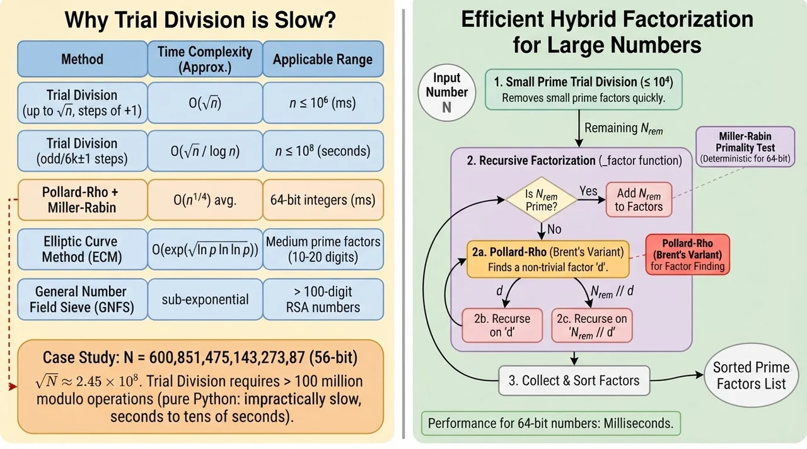
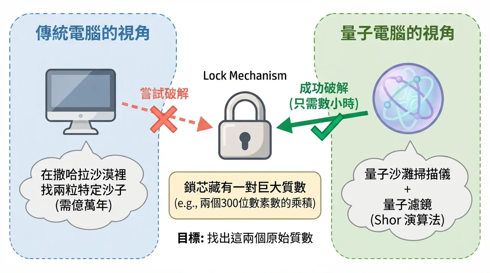
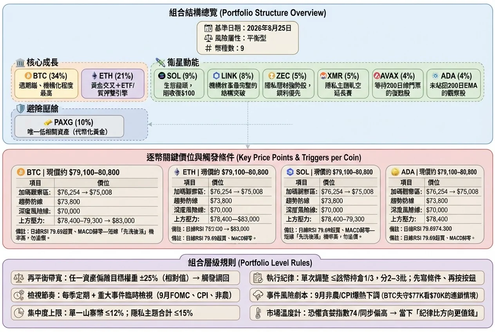
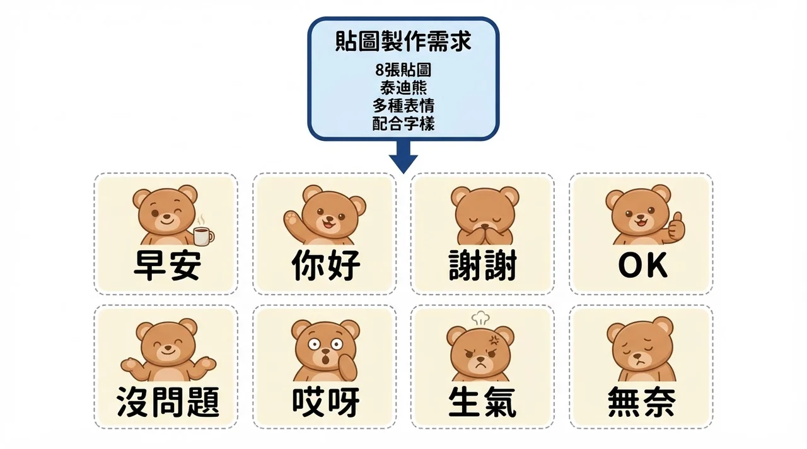
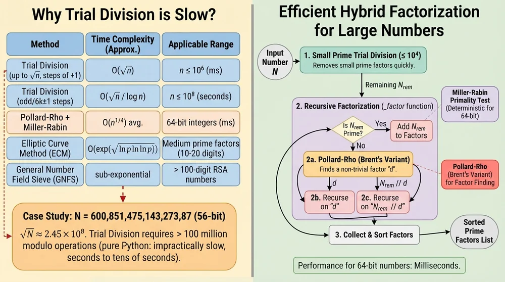

輸入一段方法論的文字描述，自動生成論文風格的方法論示意圖。
本機執行、單一檔案、雙擊即開，支援多輪自我精煉。
PaperBanana 是一套「論文插圖自動生成」工具。你不需要會畫圖或排版， 只要用自然語言描述你的方法流程，它就會產出一張可以直接放進論文的示意圖。
中文或英文描述都可以。段落、Markdown 表格、甚至整篇方法論都能當輸入。
每一次生成後會自我檢查並重畫，迭代次數可調（1～10 輪），越多次越精緻。
用瀏覽器開本機的 5051 埠操作，資料不經過任何第三方伺服器，除了模型 API。
整個流程分四步，每一步都由大型模型驅動：
在網頁介面的文字框寫下方法論內容，例如「我們提出一個具多頭注意力與前饋網路的分類模型」。
語言模型把抽象文字翻譯成一份「版面規劃書」：哪裡放哪個區塊、箭頭往哪走、用什麼配色。
使用的模型是 google/gemini-2.5-flash。
圖像模型依規劃書把圖畫出來，使用 google/gemini-3.1-flash-lite-image。
這一步是整條流程中唯一會產生實際圖片的環節。
把剛生成的圖回頭對照原始描述，找出錯字、箭頭方向錯誤、擁擠的區塊， 改寫規劃書後重畫。重複到設定的次數為止，最後一輪的結果就是成品。
以下都是真實跑出來的結果，未經人工修圖。每張下方標註當初輸入的描述主題。




同一段輸入、同一個模型，差別只在「跑幾輪」。左邊是第 1 輪的原始輸出， 右邊是經過自我檢查修正後的最終版本。

需要三個東西：Python 環境、一個 OpenRouter API Key、以及這個資料夾的檔案。
# 1. 安裝相依套件（只需做一次）
pip install flask paperbanana
# 2. 把 OpenRouter API Key 存成檔案
# 在資料夾裡建立 .openrouter_key，內容只放那一行金鑰
# 或把金鑰貼進 PaperBanana.py 最上面的 KEY_CONTENT 變數
# 3. 啟動（Windows 直接雙擊 PaperBanana.bat 也可以）
python PaperBanana.py
# 4. 瀏覽器會自動開啟 http://localhost:5051
# 輸入描述 → 設定 Refine 次數 → 按 Generate| 元件 | 選用 | 用途 |
|---|---|---|
| 網頁框架 | Flask | 提供單一頁面與 /api/generate 介面，跑在本機 5051 埠 |
| 生成框架 | paperbanana 套件 | 負責規劃、生成、精煉的完整流程編排 |
| 語言模型（VLM） | google/gemini-2.5-flash | 讀懂描述、規劃版面、檢查錯誤 |
| 圖像模型 | google/gemini-3.1-flash-lite-image | 把規劃書實際畫成圖片 |
| 路由服務 | OpenRouter | 用單一 API Key 呼叫上述兩種模型 |
| 輸出位置 | pb_output/runs/ | 每次生成建立一個資料夾，保留各輪圖片與規劃紀錄 |
本工具的方法論來自 PaperBanana: Automating Academic Illustration for AI Scientists （Dawei Zhu、Rui Meng、Yale Song、Xiyu Wei、Sujian Li、Tomas Pfister、Jinsung Yoon， arXiv:2601.23265，Google Cloud AI Research／北京大學）。 原始框架後續以 PaperVizAgent 之名開源於 Google Research。
本頁與此 repo 是基於該論文與公開套件所做的個人單機版整合， 與原作者、Google 無隸屬或背書關係。學術引用請引用原論文。